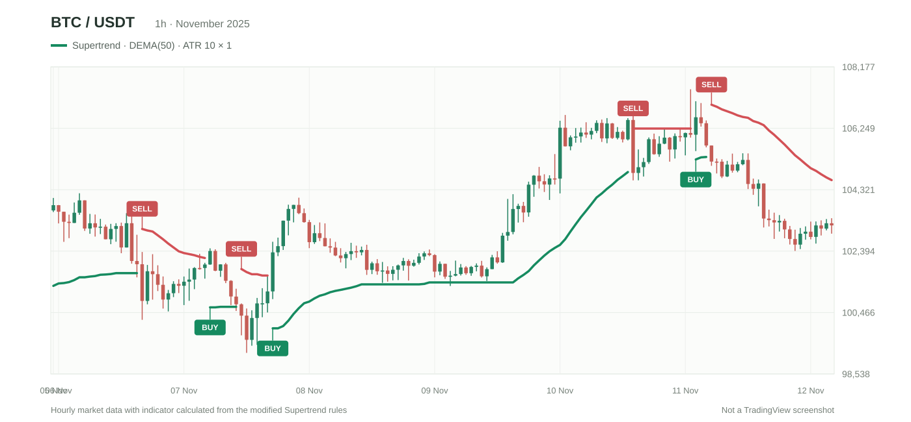

S&P 500 / Premium Pine Script
SPY Broke Above the Opening Range. Then It Fell Through the Floor.
Two consecutive SPY sessions show what the 30-minute range, stop, and one-trade rule do when a breakout holds and when it fails.
Explore the Gold Breakout track record, historical BUY / SELL / EXIT signals and real charts. Join Gold Signal Room for instant email, Discord and Telegram alerts.

The first breakout of the overnight range. Watch historical signals for free, or unlock instant member signals and notifications in Gold Signal Room.
From $4.99Can a simple overnight range produce a disciplined daily trading plan? This strategy tracks the early high and low, takes the first breakout, and limits trading to one position per day.
A modified Supertrend that uses DEMA as its source and converts buy/sell signals into simulated long and short trades.

Which chart needs a second look? Scan up to 30 symbols and get alerted when a confirmed daily trend changes color.

See what happens when the first break of SPY’s 30-minute opening range runs all day, then fails on the very next session.

Connect Supertrend signals to a Chrome extension with a color strip on the chart. No TradingView technical alerts, webhooks or separate bot subscription.

Get a dedicated TradingView alert when a qualifying pinbar is immediately followed by a 3 Line Strike signal without waiting around to spot the combination manually.

A breakout label is only the starting point. This free indicator follows qualifying bearish setups to their 1R targets and shows which ones get there.

Pine Backtest Studio lets you import your own historical candles, run unlimited strategy tests and look beyond net profit with drawdown, Sharpe, Sortino, weekly results, trade streaks and downloadable trade logs.
Two consecutive SPY sessions show what the 30-minute range, stop, and one-trade rule do when a breakout holds and when it fails.
A losing year prompted a change to Gold Breakout’s schedule. The new window changed the results and the drawdown.
Follow NVIDIA’s first red alert, one-day recovery, and second break below the 200-day average on a four-stock semiconductor watchlist.
One no-wick setup retested in six candles. Another came back too late. Follow both on real 15-minute gold charts.
Import price data, run a Pine v5/v6 strategy and study drawdowns, Sharpe, Sortino, streaks and trade logs without a subscription.
Follow the overnight-range entry rules, view real gold charts and backtest results, and get the premium Pine Script during the launch offer.
No paid alerts or webhooks: Supertrend signals travel through a visual color strip to a Chrome extension that connects with Binance Futures.
Combine a pinbar with the next candle’s 3LS signal and choose bullish, bearish or any-direction notifications.
Follow breakout signals beyond the entry, with 1R hit, expiry and multi-trigger tracking.
A detailed walkthrough of the indicator, strategy modification and the limited-time premium source-code offer.
How the source setting changes the indicator, illustrated using real chart examples.
I'm a software engineer who works on TradingView indicators and Pine Script strategies. This is where I share some of the scripts, the original ideas behind them, and what I changed along the way. The aim is to keep everything easy to understand, even if you're new to Pine Script.
If you run into any issues with installation, chart configuration, or anything related to a script, email support@signaltoscript.com.